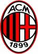

Testing PI:popfragment
Some text
Just move the cursor over this text and you will see what I mean.
Ronaldinho and Kaka are two Brazilian footballers
who have been for AC Milan
Associazione Calcio Milan

Associazione Calcio Milan, commonly referred to as A.C. Milan or simply Milan, is an Italian professional football club based in Milan, Lombardy. It was founded in 1899. The club has spent most of its history in Serie A, the top-flight of Italian football, having played only two seasons in Serie B in the early 1980
Milan's home games are played at San Siro, also known as the Stadio Giuseppe Meazza. The stadium, which is shared with Inter, is the largest in Italian football, with a total capacity of 80,074
Ricardo Izecson dos Santos Leite
born 22 April 1982, commonly known as Kaká, is a Brazilian football midfielder who currently plays for Spanish La Liga club Real Madrid and the Brazilian national team. He also holds an Italian passport, which enables him to play as an EU player. He started his footballing career at the age of eight, when he began playing for a local club. At the time, he also played tennis, and it was not until he moved on to São Paulo FC and signed his first professional contract with the club at the age of fifteen that he chose to focus on football.
Ronaldo de Assis Moreira

born 21 March 1980 in Porto Alegre, commonly known as Ronaldinho or Ronaldinho Gaúcho, is a Brazilian footballer who plays for Italian Serie A club A.C. Milan and the Brazilian national team. He is a free-kick specialist and has exceptional dribbling ability.
Ronaldinho, Portuguese for "Little Ronaldo," is known in Brazil by the nickname "Gaúcho," in order to distinguish him from Ronaldo, who was already called "Ronaldinho" in Brazil. Ronaldo simply went by his first name upon his move to Europe, thereby allowing Ronaldinho to drop the "Gaúcho" and remain simply as Ronaldinho.
Content file for this page
Script
Defined fragments